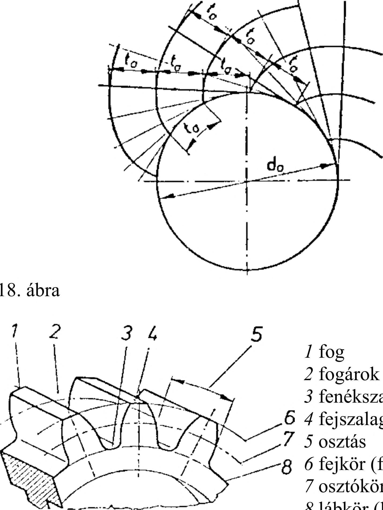

22. Hajtások 22.2. Fogaskerékhajtás A gépekben, berendezésekben a forgó mozgás és a nyomaték átvitelére gyakran létesítünk fogaskerék kapcsolatot. A kapcsolódó fogaskerékpár kényszerkapcsolatban van egymással. Az egyik kerék foga kapcsolódik a másik kerék fogárkába, az egyik fogfelület a másik fogfelületen elvileg csúszásmentesen gördül le. A kapcsolódó fogaskerekek kerületi sebessége egyenlő, ebből tehát következik, hogy a nagyobb átmérőjű fogaskerék fordulatszáma kisebb, mint a kisebb átmérőjű fogaskerék fordulatszáma (316. ábra). 22.2.1. Fogazatok jellemzői és méretei Ahhoz, hogy a kapcsolódó fogaskerekek megfelelően működjenek, számos műszaki feltételt kell teljesíteniük. Az egyik feltétel, hogy a kapcsolódó fogaskerekeken azonos méretű (vagyis azonos modulú) és azonos profilú fogakat kell alakítani. A fogaskerekek adatainak meghatározásához ismerkedjünk meg a fogaskerekek jellemzőivel. Ezt a legegyszerűbben a párhuzamos tengelyű hengeres fogaskerekeken tehetjük. Az elemi fogazás alapfogalmai: A kapcsolódó fogaskerekek a kényszerkapcsolat miatt egyenlő kerületi sebességgel forognak, az i áttétel állandó. A kerületi sebességek egyenlőségéből az áttétel: í = Az összefüggésből látható, hogy a fordulatszámok fordítva arányosak a gördülőkörök átmérőivel, ill. a fogszámmal. A fogaskerekek fogprofilja rendszerint körevolvens. Evolvens akkor keletkezik, ha valamely körön (alapkör) egy egyenest csúszás nélkül gördítünk le, és eközben az egyenes valamelyik pontjának pályáját a kör síkjában rögzítjük (317. ábra). Az előbb elmondottakat úgy is megvalósíthatjuk, hogy egy hengerre egyik végén rögzített zsinórt csavarunk, a zsinór másik végére ceruzát erősítünk. Ha a zsinórt a ceruzával állandóan feszítve lefejtjük a hengerről, a ceruza hegye a henger alá helyezett rajzlapon evolvens görbét rajzol. Ugyanazon hengerről tetszőleges helyeken lefejtett evolvensek azonos alakúak, egybevágók. Ha az alapkörről egyenlő távolságokban fejtjük le az evolvenseket, azok egymástól mért távolsága egyenlő, és megegyezik az alapköri osztással (318. ábra). A fogaskerék részeinek és a fogazat jellemző adatainak szabványos megnevezését a 319. és 320. ábra szemlélteti. A fogaskerék homlokfelületén látjuk a fogprofilt, ennek két oldalát a foggörbe határolja. A foggörbe rendszerint evolvens ritkábban ciklois. A foggörbét kívülről a da fejkör, belülről a df lábkör határolja. A h fogmagasságot a d0 osztókor (gördülőkor) két részre osztja. Az osztókörön kívül elhelyezkedő rész az ha fejmagasság, az osztókörön belül pedig az hf lábmagasság látható. A fogaskeréken azonos számú fog és fogárok van. A fog vastagságát az osztókörön s osztóköri fogvastagságnak nevezzük. A fogárok és a fogvastagság együttes ívrésze a p osztás. A fogaskerék fogszámát z -vei jelöljük. A fogat felülről a fej szalag határolja, a fogárok alján pedig a fenékszalag helyezkedik el. i áttétel nj, n 2 fordulatszám zh z2 fogszám a tengelytáv d i, d2 gördülökör0 ni,zi 316. ábra da alapkör 317. ábra 318. 1 fog 2 fogárok 3 fenékszalag 4 fej szalag 5 osztás 6 fej kör (fej henger) 7 osztókör(osztóhenger) 8 lábkör (lábhenger) 319. ábra 320. ábra d0 osztókor dafejkör df lábkör h fogmagasságot hf lábmagasság ha fej magasság 95
